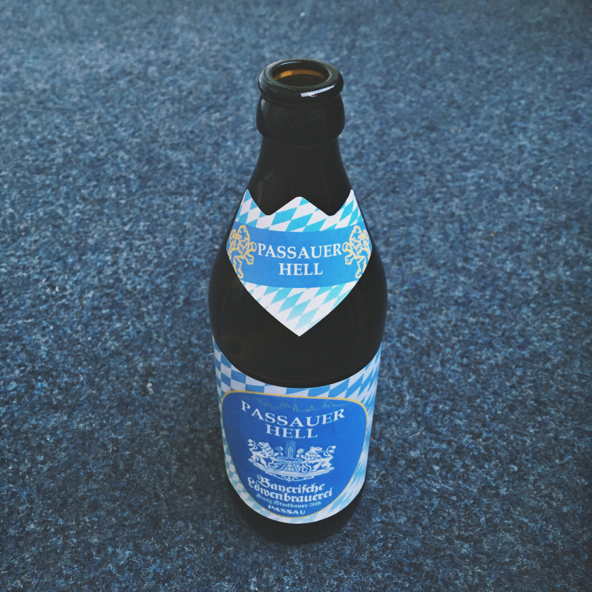

#drink

Probably the best pilsner. I spent four years in Germany drinking their beer. After three years you begin to notice minute differences, which is a feat for such a plain recipe as the pilsner. After four years and over a thousand bottles, this is the best one.